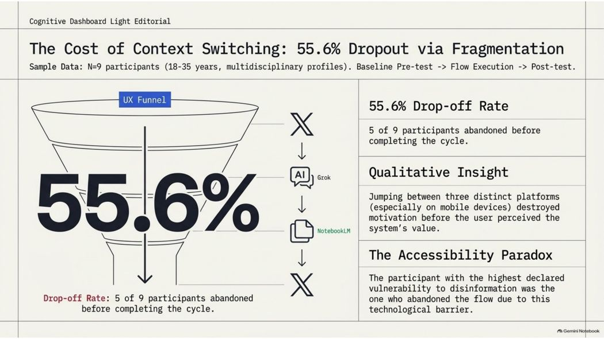
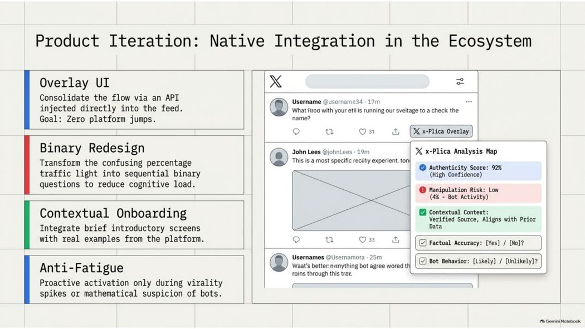
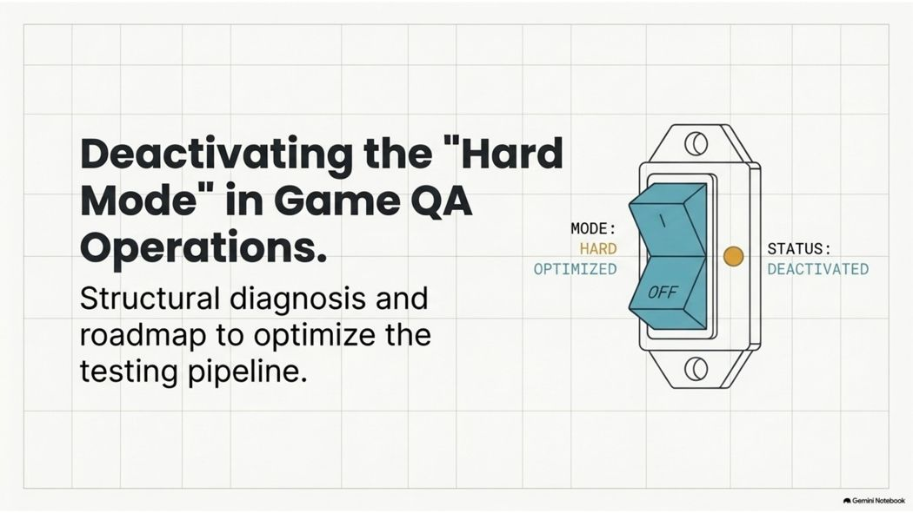
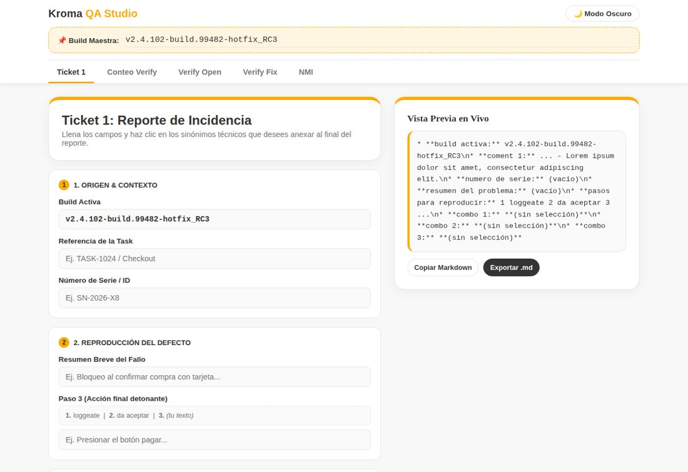
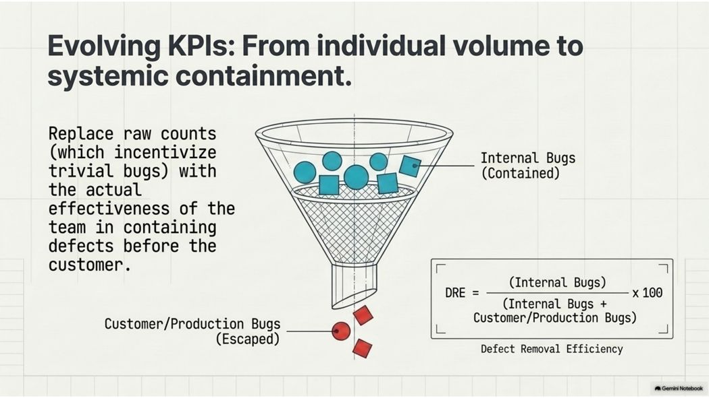

I design grounded in research… because assumptions are expensive.
UX/UI Analyst with applied experience in usability research, heuristic evaluation and reducing operational friction — with published academic work on human-AI interaction and design systems.
About
I work at the intersection of research and design: adapting usability heuristics, running qualitative studies, and translating findings into concrete product decisions. My research on human-AI interaction and operational friction has informed how I approach product diagnosis, wireframing, and validation.
Process
The same four steps, whether the deliverable is an academic paper or a shipped feature.
Frame the real question
Before testing anything, I pin down what's actually being evaluated and why it matters — a vague "improve usability" becomes a testable question tied to a specific behavior or decision.
Investigate with the right method
I choose between qualitative studies, heuristic evaluation, or both depending on the question — recruiting participants, designing tasks, and adapting Nielsen's heuristics to the specific context.
Separate signal from noise
Not all friction is a problem. I look for the type and source of friction — operational barriers to remove versus deliberate friction worth preserving — before proposing a fix.
Turn findings into something buildable
Recommendations come with a concrete artifact — a redesigned flow, a prioritized roadmap, or a working mockup — not just a slide of insights.
Selected Work
x-Plica
Usability evaluation of a hybrid human-AI workflow for critically analyzing viral content. I identified two types of friction with opposite effects on the experience.
View case study →Kroma QA Studio
Redesign of the video game QA ticket-creation flow applying Nielsen's heuristics, to cut operational errors and free up time for real testing.
View case study →x-Plica
Cognitive friction and critical agency in hybrid human-AI workflows
Context
x-Plica is a human-AI workflow (Grok 3 + NotebookLM) designed to help people critically analyze viral content on platform X, without handing the final judgment to the AI. The research focused on where the workflow helped or hindered critical reading.
My role and method
I designed and ran the full study: recruitment, task design, observation protocol, and qualitative analysis. I adapted 4 of Nielsen's heuristics to the human-AI context, plus a critical agency lens, to evaluate where cognitive load and trust broke down.
Key findings

The central finding: two types of friction with opposite effects. Operational friction (switching platforms) pushed out more than half the participants. Deliberate cognitive friction (timed reflection prompts) preserved agency and improved critical inquiry when used intentionally.
Design recommendations
- Native integration (overlay/extension) to remove platform switching
- Redesign the risk semaphore as sequential binary questions
- 3-step conceptual onboarding with real examples from X
- Selective activation to prevent alert fatigue

Kroma QA Studio
Turning off "Hard Mode" in Game QA operations
The problem
The QA team was operating in unnecessary hard mode: 35–40% of their time went into administrative tasks (spreadsheets, copy-paste, inconsistent formats) instead of real gameplay testing. The friction was not in the testing itself, but in the overhead around creating, classifying, and tracking defects.

The solution: heuristics applied to the ticket flow
| Visibility of system status | The active build is inherited and shown automatically on every ticket, no manual entry |
| Recognition over recall | A bank of technical synonyms as selectable chips (Freeze, Crash, Lag, Glitch...) instead of free-text fields |
| Consistency and standards | Unified dropdowns and a closed catalog of authorized builds, removing spelling variants |
| Error prevention | Flow segmented by stage of the bug lifecycle (Ticket → Verify Open → Verify Fix → NMI), each with its own specific fields |

Outcome
Project approved. Three-phase roadmap: quick wins (unify dropdowns, remove redundant fields), consolidation (automated forms, DRE measurement), and maturity (technical systems that scale beyond a single team). The intended result is to move the QA operation from administrative overload to sustained high-value testing.
